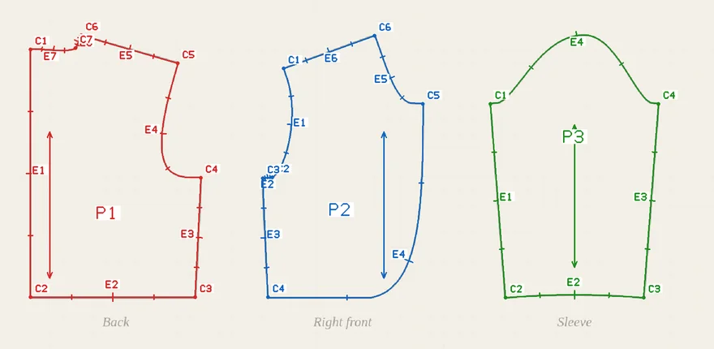

Pattern tracing
Trace, name and scale a pattern sheet. Follow the numbered contours from a drawing to editable sewing pieces.
Open the sheet
1. Choose and trace a sheet
Studio example · Three named bolero pieces. The synthetic design sets the back hem to 180 mm.
Download the related bolero pattern · A4 PDF The PDF comes from the native draft. The traced sheet is a separate exercise.
Image preparation and tracing settings
Use an already correctly oriented image: like the Python skill, the trace ignores a photo's EXIF rotation. Transparent areas count as white. Oversized inputs are refused, not automatically resized. An animated WebP gives its first frame. Convert HEIC to PNG or JPEG before opening. Changing the source or settings resets the edits below.
2. Review names and known lengths
Inspect the overlay and source-label crops below. Enter names.json to name pieces, edges, seams and construction. For example, {"pieces":{"p1":{"id":"front","name":"Front"}}}. Unspecified pieces remain unchanged; names are not inferred from the image.
Scale targets refer to the renamed pattern and use explicit millimetres, for example [{"reference":"front/e1","target_mm":200}]. Leave [] to keep the draft UNSCALED. Do not guess a target from how the picture looks.
Optional printed-label evidence for the audit
Use the native audit's labels.json list. Keep [] when no printed dimension evidence has been transcribed.
Each application starts from the original trace: repeating a scale or mirror operation does not accumulate it.
Save unfinished editor text, including JSON that still needs repair. To reopen it, trace the original image with the same tracing settings first. Loading replaces all three editors together without applying them; the existing audit and scale checks still run when you apply. Drafts contain no source image or cutting approval. Limit: 8 MiB overall, 256 KiB per editor. Keep drafts privately.
This opens a new local Workbench tab with the current pattern. Choose measurement evidence and a fit contract there, then explicitly run its normal checks. Tracing review does not approve cutting or fit.
Choose materials sends only the current reviewed pattern and source image hash to Material Workbench. Assign materials and explicitly bind before running manufacturing. Measurements, fit and body evidence must be selected separately. Choose materials requires a fitted trace scale; use Pattern Workbench to review an unscaled trace.
Review images are not for cutting. Verify scale with a known length and check the garment against your measurements.